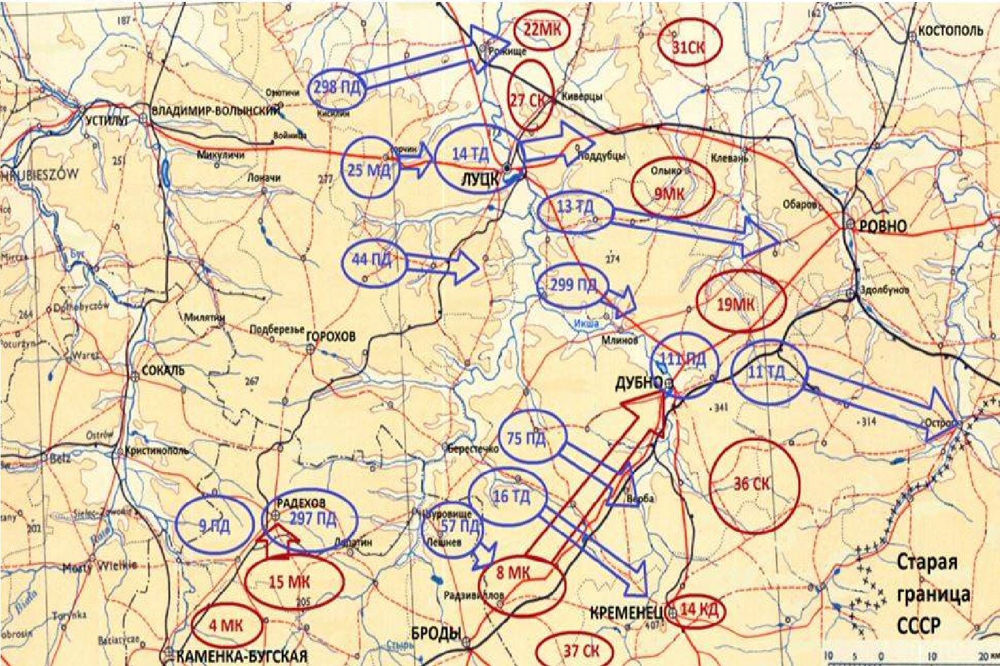
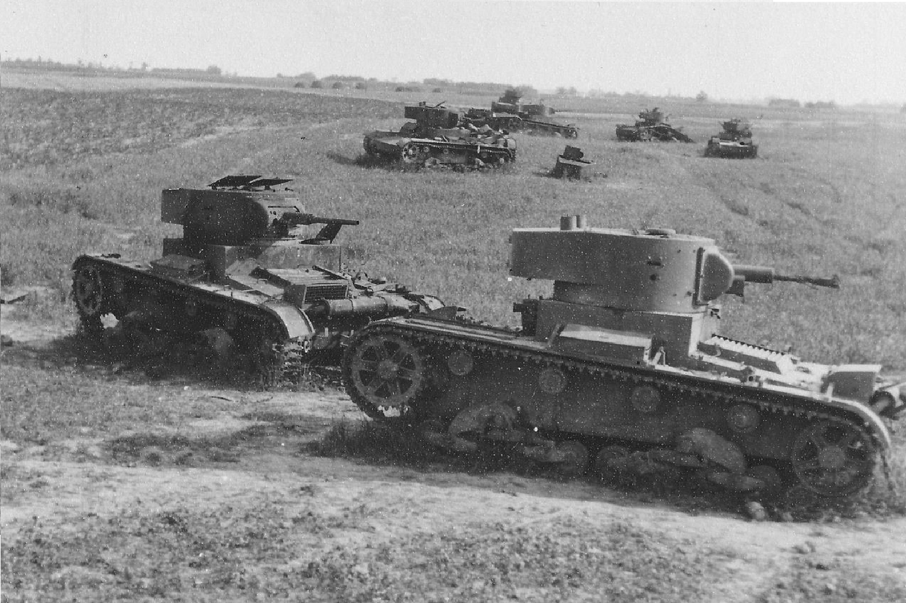
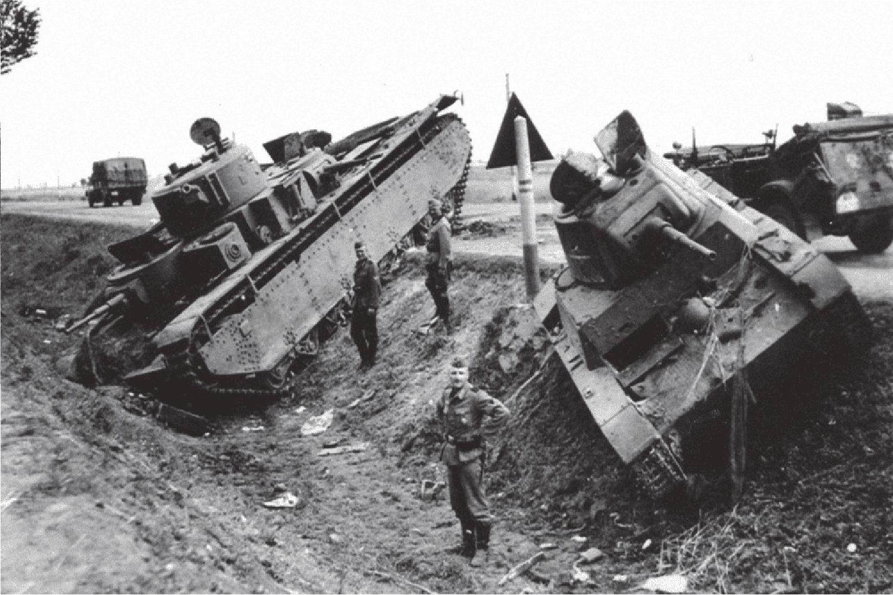

|  |
Танковое сражение под Дубно, также известное как Дубненская операция, произошло в июне 1941 года и стало одним из первых крупных танковых сражений Великой Отечественной войны. Оно происходило в рамках начальной стадии немецкого наступления на Советский Союз.
Предыстория
1. Начало войны: Операция "Барбаросса" стартовала 22 июня 1941 года, и немецкие войска стремительно продвигались на восток.
2. Стратегическое значение: Дубно находилось на важной транспортной артерии и имело стратегическое значение для обеих сторон.
|
▎Силы сторон
- Советские войска: В районе Дубно находились части 5-й армии и 12-й танковой дивизии, а также другие соединения. Всего советские войска располагали значительным количеством танков, включая Т-34 и КВ.
- Немецкие войска: Группа армий "Центр" под командованием генерала Фон Бока, которая имела превосходство в тактике и организации, а также опыт применения танковых соединений.
▎Ход сражения
1. Наступление немцев: Немецкие войска начали наступление на позиции советских войск 25 июня 1941 года.
2. Танковое сражение: В сражении участвовало большое количество танков с обеих сторон. Советские танки Т-34 и КВ показали свою эффективность, но их численность была недостаточной для противостояния хорошо организованным немецким танковым частям.
3. Отступление советских войск: Несмотря на героическую оборону, советские войска не смогли остановить немецкое наступление и были вынуждены отступить.
|
 |
|  |
▎Итоги
- Поражение советских войск: Сражение под Дубно закончилось поражением советских сил, которые понесли значительные потери.
- Стратегические последствия: Это сражение продемонстрировало важность мобильности и тактического маневра в танковых боях, а также выявило недостатки в организации советских войск на начальном этапе войны.
▎Значение
Танковое сражение под Дубно стало важным уроком для советского командования, которое впоследствии внесло изменения в стратегию и тактику ведения боевых действий. Оно также продемонстрировало силу немецкой танковой тактики, которая использовалась на протяжении первых месяцев войны. Вверх
|